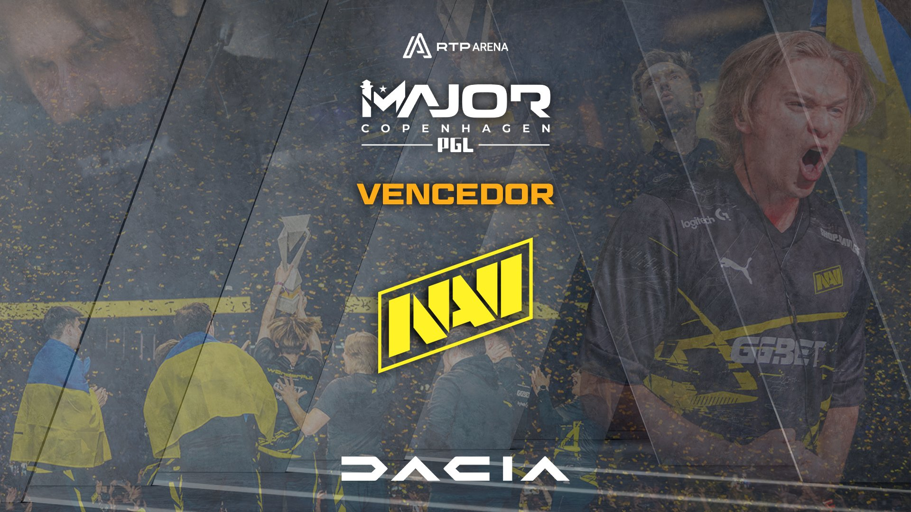

Sobre a Empresa
A empresa foi fundada em 2020, com o objetivo de promover e armazenar a história do CS2. Nossos antecessores foram apaixonados por jogos e sempre buscaram criar uma comunidade forte.


Sobre o Site
Somos entusiastas de CS2 e criamos este site para armazenar a história do CS2, compartilhar informações sobre eventos e promover a comunidade. Aqui, você encontrará tudo sobre o jogo e seus principais momentos.
Major Copenhagen 2024

Parabéns ao time vencedor do Major Copenhagen 2024! A equipe se destacou por sua performance impecável e trabalho em equipe. Os jogadores foram fundamentais para a vitória, demonstrando habilidades excepcionais e estratégias inovadoras.
Edits de CS2
Contato
Entre em contato conosco pelo e-mail: contato@exemplo.com